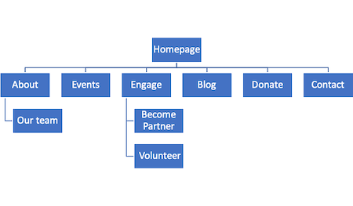

Business Plan
Website and Goals
BeYou is a local non-profit organization, focusing on creating a diverse community of youth makers – technologists, leaders, and innovators – by providing all students, especially underrepresented and socioeconomically challenged groups with opportunities to discover and foster their passion for STEM, computing and making. Establishing an online presence can help the organization raise more money, increase new and existing donors, increase new and existing volunteers, and provide more technology improvement programs in the community. BeYou aims to communicate different activities and opportunities for visitors to become involved. BeYou also aims to provide access to specialized resources and information visitors can’t get elsewhere. BeYou’s website will have design elements that engage visitors. In order to make the website user-friendly and intuitive, BeYou website will have the following, but not limited to these characteristics:
- A well-defined navigation
- An easy-to-read layout
- High quality visualizations
- Hi-contrast fonts
- A well-designed logo
- A complementing color schemes
Steps to achieve those goals
- Increasing traffic by organic search, referrals from other websites, social media, email newsletters, direct traffic.
- Produce fresh, interesting content give visitors reasons to come back to the website.
- Having clear links and CTA buttons.
- Not just use social media, but also requires better integration and visitor engagement.
- Try to enable greater campaigning and action rather than just focusing entirely on fundraising.
Website audience
BeYou aims to target three main audiences:
- Donors – individuals that supports the cause through financial means.
- Volunteers – individuals that provides services to benefit the organization.
- Funders – foundations and entities that can provide funding for the day to day service.
Storyboard

The following BeYou webpages aims to reflects visitors interests and expectations.
- Home: Lets visitors if they’ve come to the right place and make first impression.
- About: Displays information about the organization’s mission, vision, values, objectives, and goals.
- Our Team: Displays profiles of team members in the organization.
- Events: Displays a list of upcoming events.
- Blog: Updates supporters/members on the organization work and involvement.
- Donate: Displays information regarding donation (forms, mode of payments, etc).
- Contact: Displays different mode of communication to get in contact with the organization.
Media
In order to keep visitors engaged, fresh and interesting content will be produced through the following media:
- Infographics – a visual representation of data or information to appeal to visitors.
- Videos – 2-3 minutes long videos to learn more about certain topics.
- Photo gallery – photos of events or activities.
- Linked pages – an accessible way for visitors to reach other resources that associates with the organization or cause.
- Comments – a way of communication with visitors and those who wish to discuss topics relating to a blog/posts.
Marketing and Competition
The marketing strategy for BeYou aims engage visitors with video storytelling, emails, newsletters, and social media.
- Showcase the organization’s personality and brand, helping distinguish from competitors.
- Tailored messages to new and existing visitors.
- Embracing video to create an emotional and personal connection between donors and beneficiaries.
- Creating non-traditional fundraising campaigns
- Voting Contests: Donors vote through donations where most raised wins.
- Sponsor a ____: Donors sponsor a pet, tree, or department, etc., and feature them on the website.
- Project Funding: Donors to fund new ideas or business plan after featuring and explaining them in a video or a blog posts.
Copyright and intellectual property matters
BeYou will adhere to best practices for nonprofits in protecting, leveraging, and licensing the valuable content to other, the role of copyright notices, and effectively secure the copyrightable contributions of the donors/funders/volunteers by performing the following actions:
- Use copyright notices (e.g., © 2019 BeYou. All rights reserved) prominently and consistently on and in connection with all creative work.
- Register BeYou name and important logos, slogans, and other trademarks with the U.S. Patent and Trademark Office
- Register BeYou’s website, publications, and all other important, original, creative work (that are fixed in any print, electronic, audio-visual, or other tangible medium) with the U.S. Copyright Office
- Ensure that BeYou owns or has appropriate permission to use all intellectual property (graphics, logo, etc.) that it uses in its publications, on its website, on social media, and in all other media.